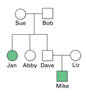
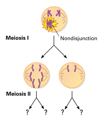

Reviewing Concepts
Multiple Choice
Choose the letter of the best answer.
1. The complete set of genetic material in an organism is called its
a. chromosome.
b. histone.
c. transposon.
d. genome.
2. Trisomy 21 is a condition usually caused by
a. nondisjunction.
b. chromosome deletion.
c. chromosome inversion.
d. Down syndrome.
3. When a fragment of one chromosome attaches to a nonhomologous chromosome, this process is called a
a. duplication.
b. translocation.
c. deletion.
d. nondisjunction.
4. What is the probability that each child born to two carriers of a recessive-disorder allele will have the disorder?
a. 1/3
b. 1/8
c. 1/4
d. 0
5. A person who is a carrier for a sex-linked recessive disorder
a. is male.
b. is heterozygous for the disorder.
c. is homozygous for the disorder.
d. cannot pass the allele for the disorder to offspring.
6. The chances of cancer developing in an individual increases if a cell that has an oncogene also
a. has a mutation in a tumor-suppressor gene.
b. does not make growth factors.
c. self-destructs.
d. all of the above.
Short Answer
7. Describe how 2 meters of DNA can fit inside a cell's nucleus.
8. What is the name for the set of symptoms shown by people with trisomy 21? List some of the symptoms.
9. Which type of chromosomal damage might affect more than one chromosome? Explain.
10. How can a tranposon interfere with another gene?
11. How can a family pedigree be used to help determine the probability of having a child with a genetic disorder?
12. Which are more common, lethal dominant alleles or lethal recessive alleles? Explain your answer.
13. Why are there more men than women with colorblindness?
14. Describe the job of a genetic counselor.
15. Is it certain that someone who inherits a cancer gene will get cancer? Explain.
Visualizing Concepts
16. Draw three sketches depicting what the chromosomes below would look like after the described damage affects the indicated area.

Applying Concepts
Analyzing Information
17. Analyzing Diagrams Use the pedigree below to answer the questions.
a. List the names of people with the trait.
b. Is this a recessive or dominant trait? Is it a sex-linked trait? Explain.
c. List the names of any carriers of the trait.
d. If Jan married a man who was heterozygous for this trait, what is the probability that any one of their children would have the trait?

18. Analyzing Diagrams Use the diagram below to answer the questions.
a. On a separate piece of paper, draw the four gametes produced, including the number of chromosomes in each. Explain how each gamete is abnormal.
b. Note that the process shown is simplified, showing only two pairs of chromosomes at meiosis I. In a human, how many pairs of chromosomes would there actually be at meiosis I?

Critical Thinking
19. Evaluating the Impact of Research Describe some benefits of having a complete map of the human genome.
20. Making Generalizations Which kinds of chromosomal abnormalities would be hard to detect in a karyotype? Explain.
21. Problem Solving Note again that the woman whose genotype is unknown in the pedigree for colorblindness (Figure 12-14) has one son with normal vision. Suppose she has a second son who is colorblind. Now can you determine her genotype? Explain. Alternatively, suppose her second son had normal vision. Can you determine her genotype then? Explain.
22. What's Wrong With These Statements?
Briefly explain why each statement is inaccurate or misleading.
a. Jumping genes jump from one organism into another.
b. Sex-linked traits don't occur in females.
c. Cancer is a genetic disease and therefore is always inherited.
Performance Assessment
Biology Research Project Go to the library or the Internet to research non-disorder traits that have simple Mendelian inheritance (like earlobe attachment). Choose one such trait and write a brief report. Include in your report a made-up pedigree that illustrates how the trait is inherited. Be sure that it follows the inheritance rules for the trait.